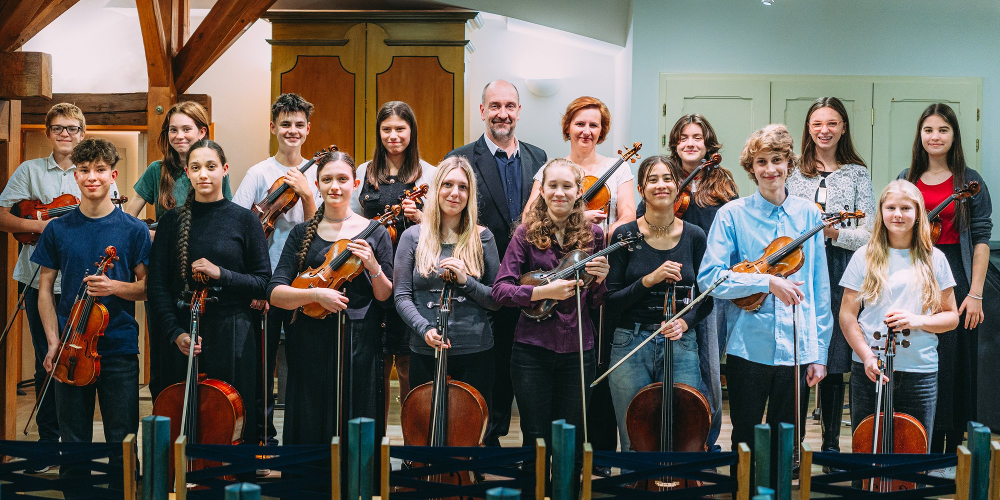
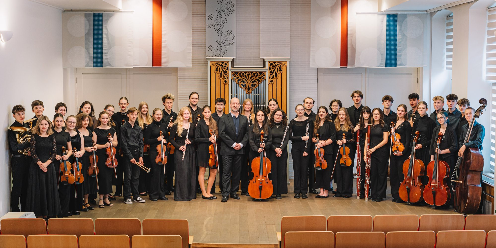
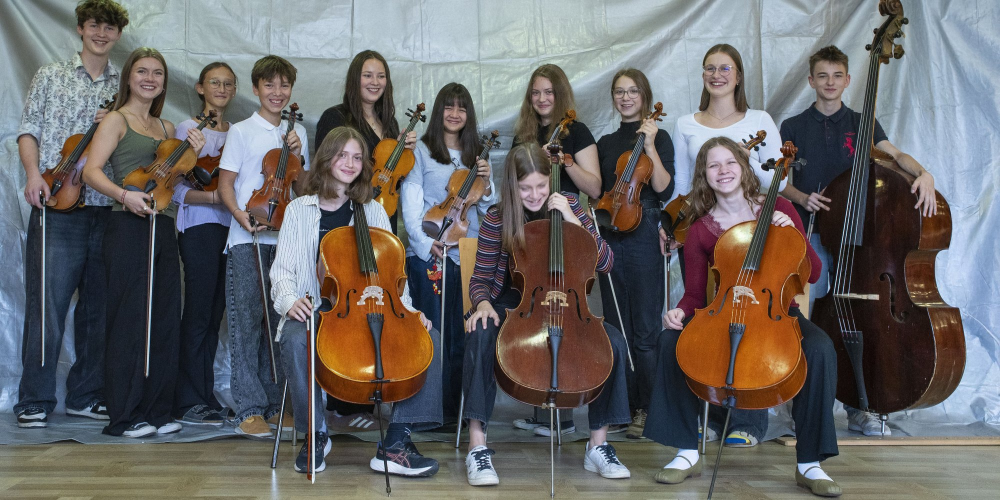
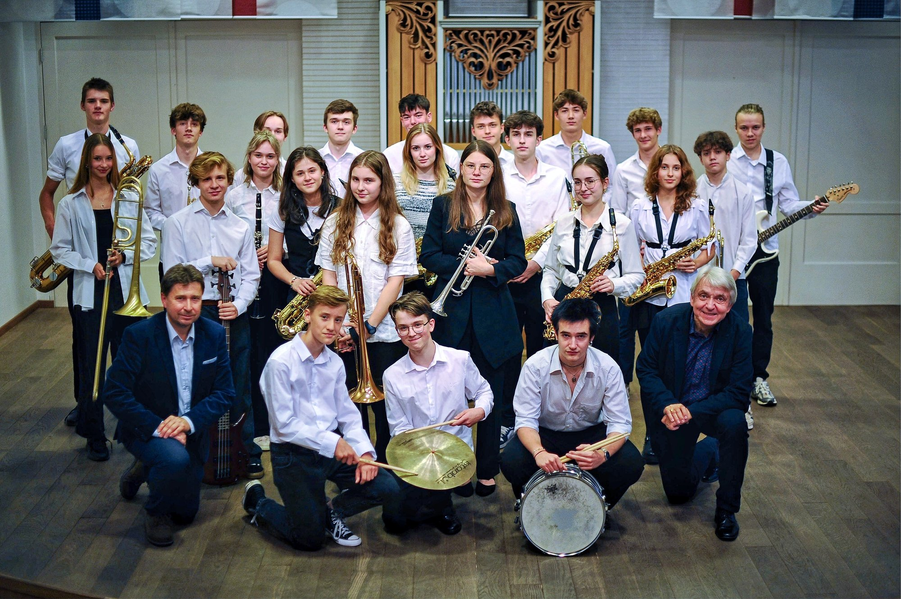
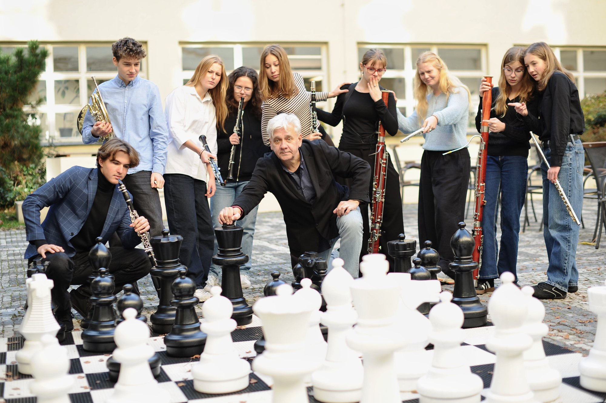
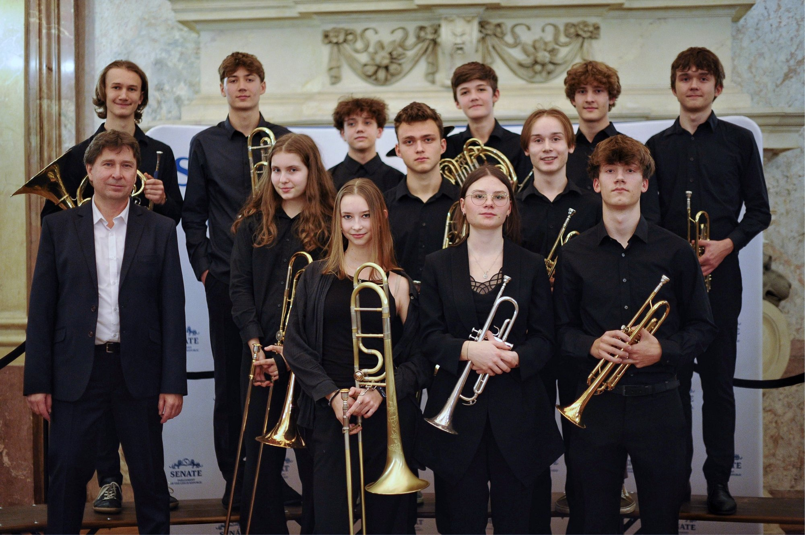
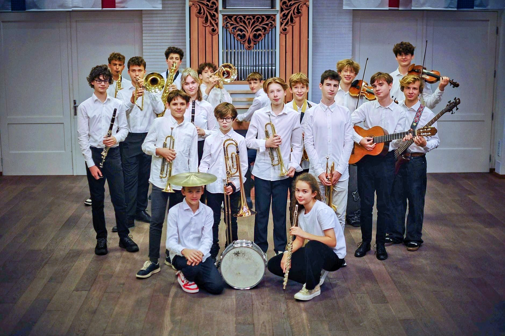
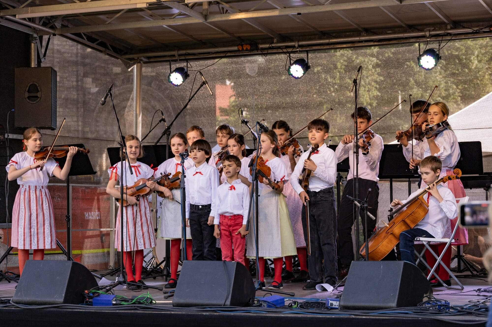

Ema Adamková vítězkou kytarové soutěže ve Vídni
září 2026 · pedagog: [JMÉNO PEDAGOGA]
Číst více →
září 2026 · pedagog: [JMÉNO PEDAGOGA]
Číst více →[NÁZEV SOUTĚŽE] · [MĚSÍC ROK] · pedagog: [JMÉNO PEDAGOGA]
[NÁZEV SOUTĚŽE] · [MĚSÍC ROK] · pedagog: [JMÉNO PEDAGOGA]

Vybraní studenti gymnázia; koncerty v Rudolfinu, Obecním domě i v zahraničí.
Dirigent prof. Petr Jiříkovský
[KRÁTKÝ POPIS SOUBORU]
[UMĚLECKÝ VEDOUCÍ]
Jazzový orchestr od swingu po moderní kompozice, hraje od roku 2008.
prof. Michal Reiser, prof. Roman Fojtíček
Dechový soubor, absolutní vítěz soutěže Concerto Bohemia 2010.
Založil prof. Pavel Tylšar
Hraje na slavnostních akcích – v Senátu, v Betlémské kapli i v Klementinu.
prof. Imrich Somoš, prof. Michal ReiserŽáci hudební školy, repertoár od baroka po současnost. Od září 2025.
Daniela Oerterová, Petr Jiříkovský
Přípravka BigBandu Plus – jazz, blues, latina a první improvizace.
prof. Roman Fojtíček
Folklorní soubor pro děti a mladé od 5 do 16 let.
Diana Nováková[KRÁTKÉ SHRNUTÍ AKCE – kdo hrál, co zaznělo, 2–3 věty. Po akci se sem automaticky přesune záznam z programu a doplní se fotky.]
Komenského náměstí 400/9, Praha 3 · bezbariérový přístup
Komenského náměstí 400/9, Praha 3
Wuchterlova 5, Praha 6
Dušní, Praha 1
náměstí Republiky 5, Praha 1
Betlémské náměstí, Praha 1
Od roku 2013 spolupracujeme s hudební částí Gymnázia Adalberta Stiftera v Linci. Společné orchestrální a komorní koncerty v Praze i v Linci, od roku 2016 v programu Erasmus+.
Jednou měsíčně přehled koncertů a soutěží. Program si můžete i přidat přímo do svého kalendáře.